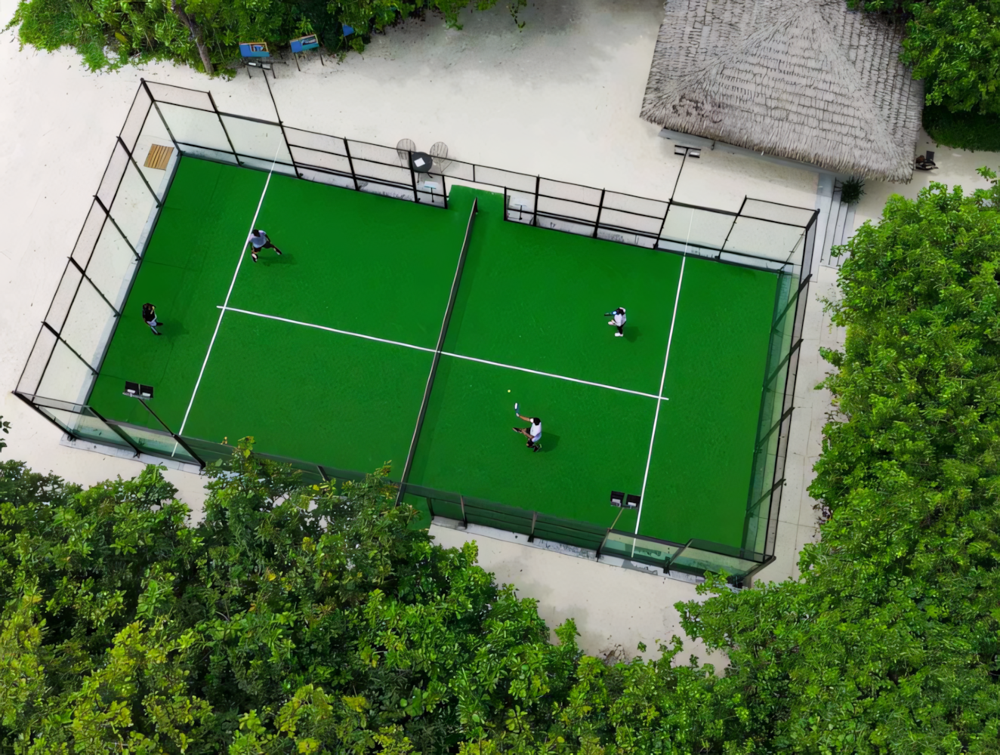
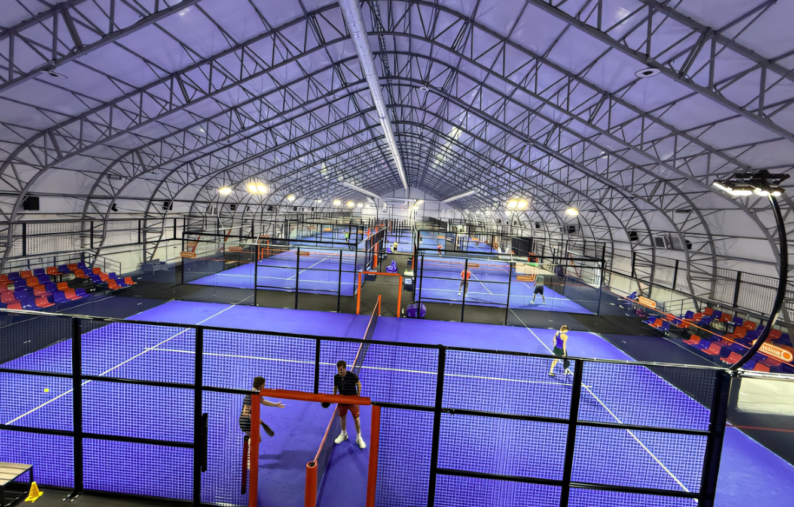
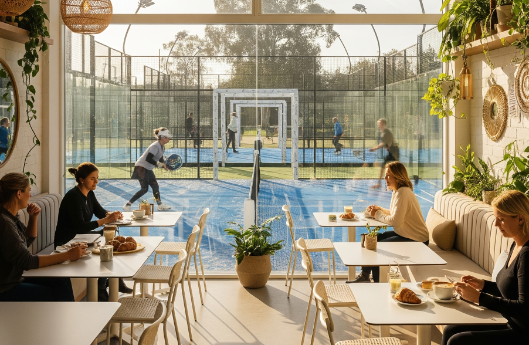

Urutan Merk Raket Padel Terbaik di Dunia : Pilihan untuk Pemula hingga Profesional Padel semakin populer di Indonesia, dan pemilihan raket yang tepat menjadi kunci untuk meningkatkan performa bermain. Namun, dengan puluhan merk raket padel di pasaran, pe...
Read More

Potensi Bisnis Padel Court di Indonesia: Analisis Mendalam dan Proyeksi Keuntungan 2025–2030 Latar Belakang Pertumbuhan Global Padel Padel, olahraga raket yang menggabungkan elemen tenis dan squash, sedang mengalami pertumbuhan eksponensial secara glo...
Read More

Sejarah Olahraga Padel: Dari Meksiko hingga Populer di Indonesia Olahraga padel, yang kini mulai digemari di Indonesia, memiliki sejarah unik yang dimulai di Amerika Latin dan menyebar ke seluruh dunia. Kombinasi antara tenis, squash, dan bulu tangkis in...
Read More

Padel, olahraga yang menggabungkan elemen tenis dan squash, semakin populer di Indonesia. Seiring meningkatnya minat masyarakat, permintaan akan jasa pembuatan lapangan padel dan supplier lapangan padel pun terus meroket. Namun, tantangan utama yang dihad...
Read More

Memahami Pasar dan Tren Padel di IndonesiaOlahraga padel sedang mengalami pertumbuhan pesat di Indonesia, terutama di kalangan masyarakat urban dan generasi muda. Gabungan antara tenis, squash, dan bulu tangkis membuat olahraga ini menarik bagi berbagai k...
Read More
Rata-Rata Sewa Lapangan Padel di Indonesia: Tren, Lokasi, dan Faktor yang Mempengaruhi Biaya Padel, olahraga yang menggabungkan elemen tenis dan squash, semakin populer di Indonesia dalam beberapa tahun terakhir. Seiring dengan pertumbuhan minat masyarak...
Read More